|
|||||||||||||||||||||||||||
|
|||||||||||||||||||||||||||
|
野沢スキー合宿 |
| 開 催 日 | ２００９年１月１４(水）〜１６日（金） | |||
| リーダー | 川合周 | |||
| 報 告 者 | 高井（紀） | |||
| HP制作者 | 高井（紀） | |||
| 参加者数 | １２名 （会員１１名、ゲスト１名） | |||
| アルパインスキークラブの野沢スキー合宿は、今回が１８年目になるという。 「成人の日」がハッピーマンデイ制になっても、「野沢の火祭り」の１５日は変わらない。今年は、１５日が木曜だったので、３日間全て平日になった。参加者は例年より少なく、６６歳以上の年配者のみだった。 |
| スキー |
| ３日間の天候は、晴、雪、晴でスキー天気としては恵まれた。 |
| 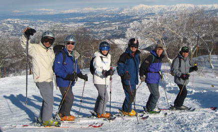 | 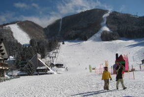 |
| 毛無山頂上 | スキー場は空いています |
| 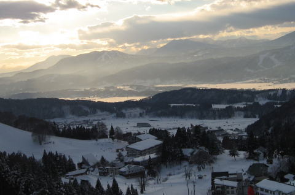 |
| 夕方まで晴天。スカイラインから野沢温泉村を見る(1/14) |
| 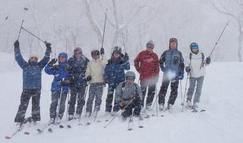 |
| 前日夜からの雪が昼頃まで続いた。ご機嫌で新雪を滑る（1/１５） |
| 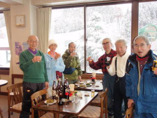 | A | 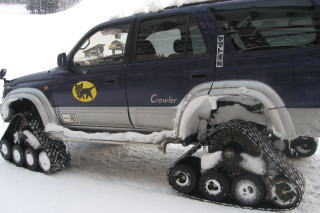 |
| 滑った後は内田食堂で乾杯！ | スキー場にはこんな宅急便の車が入ってくる |
| アフタースキー |
| スキーの後の温泉は格別、その後の美酒は最高である。 |
| 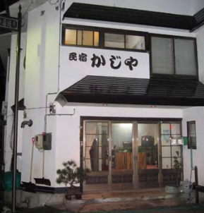 | A | 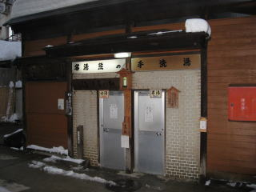 |
| 民宿かじや 女将さんの手料理は楽しみの一つ |
野沢温泉自慢の外湯の１つ「熊の手洗場」は 「かじや」から、サンダル掛けで小走り２０秒！ |
| 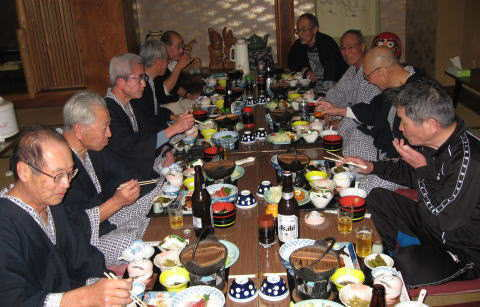 | ＡA | 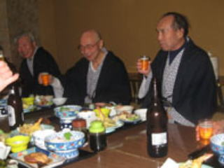 |
| 尽きることない川合リーダーの話に酒、食も進む | １５日は宮本代表が美人のゲストと参加 |
| 道祖神火祭り |
| 「日本の三大火祭り」の１つといわれる野沢温泉の火祭りは、正式には「道祖神祭り」と呼ばれる。、星霜を重ねること１７０年。平成６年５月に文化庁より重要無形民俗文化財に指定された。 この祭りは、４２歳と２５歳の厄年の男衆が中心となり、野沢独特の社殿（木造の櫓）を建てる。 前年に男子を出産した家では感謝の意と子の成長を祈願して燈篭（傘鉾）を奉納する。 火元の家で古式にのっとり採火された火は松明に移され、神殿を守る厄年の男たちと攻める村人たちの間で男らしい荒っぽい壮絶な攻防戦が約1時間半続く。 社殿に火を入れ、激しく燃える火が最高潮に達したとき、燈篭も燃やして火祭りが終わる。 |
| 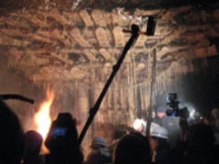 | 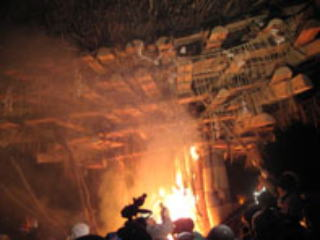 | |
| 火が入る前、攻防戦のときの社殿(21:52) |
社殿に火が入った(21:54) |
| 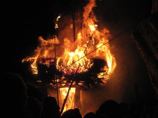 | 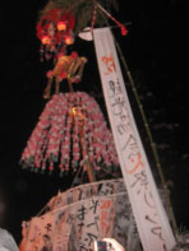 | |
| 社殿が落ちる数分前(22:14) | 燈篭; ３基 奉納者は富井福太くん、郷愛会、 野沢温泉観光協会 |
| 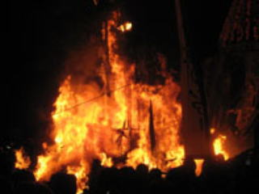 | 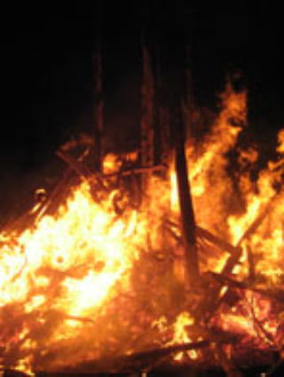 | |
| 社殿が落ちた瞬間！！(22:15) | 社殿が落ちて18ｍもあるブナの５本の芯木が残る(22:29) |
| 野沢温泉の火祭りは、社殿の組み立てのちょっとした違い、気象条件などによって、火の燃え方、社殿の落ち方などが変わってくる。 今年は、３基の燈篭全てが燃やされる前に社殿が焼け落ちてしまった。 しかし、火の燃え方は実に見事で神の火を思わせた。 火の粉を被り、足を踏まれ、押しつぶされそうになりながら祭りの感動に浸っていた。 |